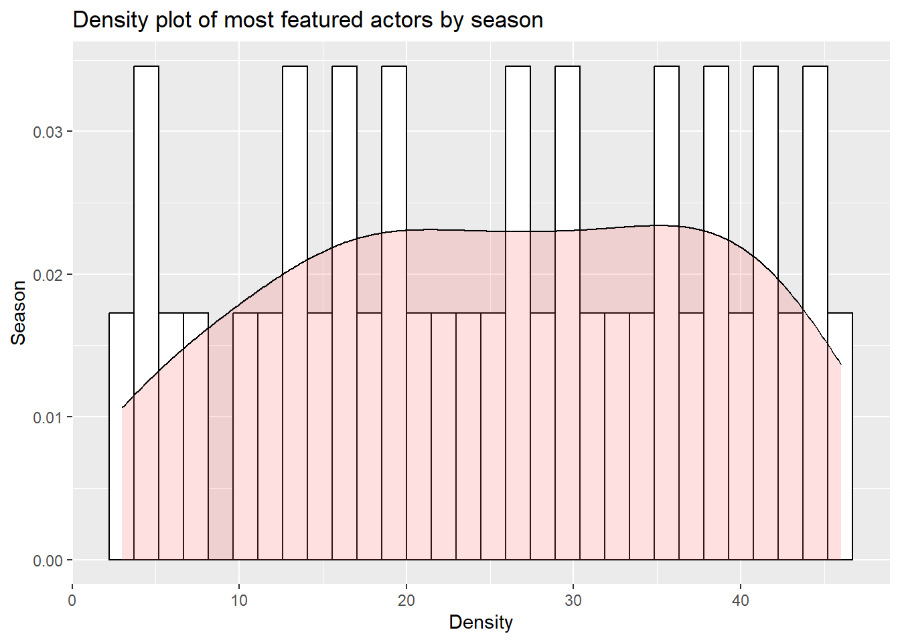
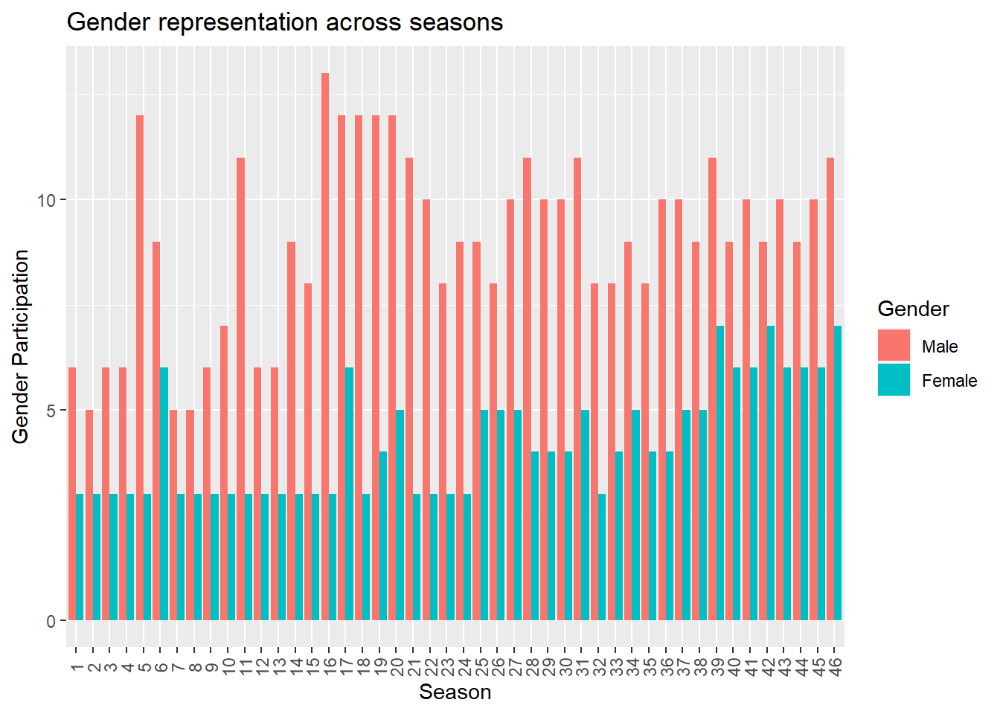

library(tidyverse)
library(ggplot2)
library(reshape2)
knitr::opts_chunk$set(echo = TRUE, warning=FALSE, message=FALSE)Challenge 8 Instructions
challenge_8
railroads
snl
faostat
debt
Joining Data
Challenge Overview
Today’s challenge is to:
- read in multiple data sets, and describe the data set using both words and any supporting information (e.g., tables, etc)
- tidy data (as needed, including sanity checks)
- mutate variables as needed (including sanity checks)
- join two or more data sets and analyze some aspect of the joined data
(be sure to only include the category tags for the data you use!)
Read in data
Read in one (or more) of the following datasets, using the correct R package and command.
- military marriages ⭐⭐
- faostat ⭐⭐
- railroads ⭐⭐⭐
- fed_rate ⭐⭐⭐
- debt ⭐⭐⭐
- us_hh ⭐⭐⭐⭐
- snl ⭐⭐⭐⭐⭐
snl_actors <- read_csv("_data/snl_actors.csv", show_col_types = FALSE)
snl_casts <- read_csv("_data/snl_casts.csv", show_col_types = FALSE)
snl_seasons <- read_csv("_data/snl_seasons.csv", show_col_types = FALSE)
head(snl_actors)# A tibble: 6 × 4
aid url type gender
<chr> <chr> <chr> <chr>
1 Kate McKinnon /Cast/?KaMc cast female
2 Alex Moffat /Cast/?AlMo cast male
3 Ego Nwodim /Cast/?EgNw cast unknown
4 Chris Redd /Cast/?ChRe cast male
5 Kenan Thompson /Cast/?KeTh cast male
6 Carey Mulligan /Guests/?3677 guest andy head(snl_casts)# A tibble: 6 × 8
aid sid featured first_epid last_epid update_…¹ n_epi…² seaso…³
<chr> <dbl> <lgl> <dbl> <dbl> <lgl> <dbl> <dbl>
1 A. Whitney Brown 11 TRUE 19860222 NA FALSE 8 0.444
2 A. Whitney Brown 12 TRUE NA NA FALSE 20 1
3 A. Whitney Brown 13 TRUE NA NA FALSE 13 1
4 A. Whitney Brown 14 TRUE NA NA FALSE 20 1
5 A. Whitney Brown 15 TRUE NA NA FALSE 20 1
6 A. Whitney Brown 16 TRUE NA NA FALSE 20 1
# … with abbreviated variable names ¹update_anchor, ²n_episodes,
# ³season_fractionhead(snl_seasons)# A tibble: 6 × 5
sid year first_epid last_epid n_episodes
<dbl> <dbl> <dbl> <dbl> <dbl>
1 1 1975 19751011 19760731 24
2 2 1976 19760918 19770521 22
3 3 1977 19770924 19780520 20
4 4 1978 19781007 19790526 20
5 5 1979 19791013 19800524 20
6 6 1980 19801115 19810411 13We first read in the 3 csv files associated with the SNL dataset, snl_actors, snl_casts and snl_seasons. Going further, we will check which of the columns have NA values in the first dataframe we consider, which is the snl_actors dataframe.
get_na_col_count <-sapply(snl_actors, function(col_name) sum(length(which(is.na(col_name)))))
na_col_count <- data.frame(get_na_col_count)
na_col_count get_na_col_count
aid 0
url 57
type 0
gender 0Briefly describe the data
The data consists of 3 separate files, each containing information about the actors, cast and seasons of artists who have featured on the program “Saturday Night Live”. This data gives us information about in what capacity each individual featured as (cast, crew, guest), which season had how many episodes, etc.
We can observe that only the url column contains NA values.
url_na <- subset(snl_actors, is.na(snl_actors$url))
url_na# A tibble: 57 × 4
aid url type gender
<chr> <chr> <chr> <chr>
1 Don Roy King <NA> unknown male
2 Liam Payne <NA> unknown male
3 Louis Tomlinson <NA> unknown male
4 Zayn Malik <NA> unknown male
5 Caleb Followill <NA> unknown male
6 Jared Followill <NA> unknown male
7 Matthew Followill <NA> unknown male
8 Nathan Followill <NA> unknown male
9 Regine Chassagne <NA> unknown female
10 William Butler <NA> unknown male
# … with 47 more rowsOn further investigation, we can see that all of these entries have unknown type, i.e. it is unknown whether the actor is a crew, cast or guest, except for one. “Jack Handey”, a crew, has NA url type.
Tidy Data (as needed)
Is your data already tidy, or is there work to be done? Be sure to anticipate your end result to provide a sanity check, and document your work here.
Are there any variables that require mutation to be usable in your analysis stream? For example, do you need to calculate new values in order to graph them? Can string values be represented numerically? Do you need to turn any variables into factors and reorder for ease of graphics and visualization?
Document your work here.
Join
Be sure to include a sanity check, and double-check that case count is correct!
# Join actors and casts dataframes.
a_c_join = merge(x=snl_actors, y=snl_casts, by ="aid")
# Select specific columns for visualization
a_c <- a_c_join %>%
select(aid, type, gender, sid, featured, n_episodes)# Most featured actors by no. of highest episodes by seasons
highest_episodes_by_season_by_aid <- a_c[a_c$featured==TRUE, ] %>%
group_by(sid, aid) %>%
summarise(
total_ep = sum(n_episodes)
) %>%
#arrange(sid, desc(total_ep))
summarise(
max_val = max(total_ep)
)
highest_episodes_by_season <- a_c[a_c$featured==TRUE, ] %>%
group_by(sid) %>%
summarise(
total_ep = sum(n_episodes)
)
ggplot(highest_episodes_by_season, aes(x=sid)) +
geom_histogram(aes(y=..density..), colour="black", fill="white")+
geom_density(alpha=.2, fill="#FF6666") +
ggtitle("Density plot of most featured actors by season") +
labs(
x="Density",
y="Season"
)
# Merge the previous dataframe with the seasons dataframe
a_c_s_join <- merge(x=a_c, y=snl_seasons, by="sid")
# Select required columns
a_c_s <- a_c_s_join %>%
select(sid, aid, type, gender, featured, first_epid, last_epid, n_episodes.x)
options(dplyr.summarise.inform = FALSE)
# Group data by season and gender, basis if the individual featured in the season, to get total gender counts
data <- a_c_s %>%
group_by(sid) %>%
summarise(
Male = sum(gender=='male'),
Female = sum(gender=='female')
)
data <- melt(data, "sid")
# Render bar plot for side-by-side male vs female representation by season
ggplot(data, aes(factor(sid), value, fill = variable)) +
geom_bar(stat = "identity", position = "dodge") +
theme(axis.text.x = element_text(angle = 90, vjust = 0.5)) +
labs(title="Gender representation across seasons",
x = "Season", y = "Gender Participation", fill="Gender")
From the above graph, we observe that the overall female participation has seen an increase in the recent years. Let us now take a look at a stacked plot of the same.
gender_to_cat <- data %>%
mutate(variable=as.character(variable))
gender_to_cat <- gender_to_cat %>%
rename(
Gender = variable
)
ggplot(gender_to_cat, aes(x = sid, y = value)) +
geom_bar(
aes(color = Gender, fill = Gender),
stat = "identity") +
labs(
x = "Seasons",
y = "Frequency",
title = "Stacked plot of participation through seasons"
)
On observing the above plot, we can see that while the overall number of women to participate has increased across the seasons, the proportion of women that have featured since the show’s inception has not seen a significant rise.